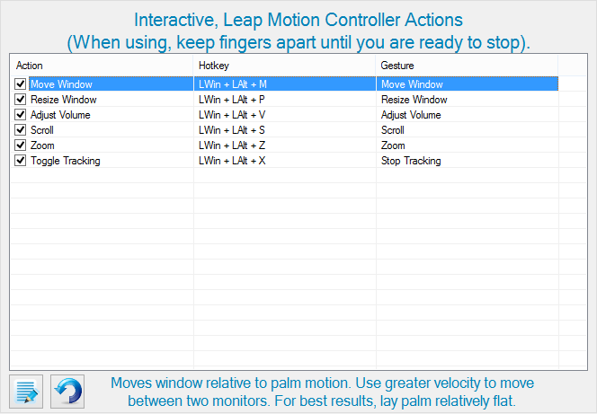

These types of actions are particularly fun as you may interactively make changes using your hand. Once an action is triggered, Windows Master will stay in an interactive mode until you make a fist and hold it for 1 second. When Windows Master has recognized this, a message will be displayed on the OSD such as
Actions are explained in further detail through the help description.
Note: if tracking seems glitchy, the issue may be the Leap Motion Controller and not Windows Master. There are multiple variables which may affect tracking -- even lighting. For troubleshooting refer to the following pages: